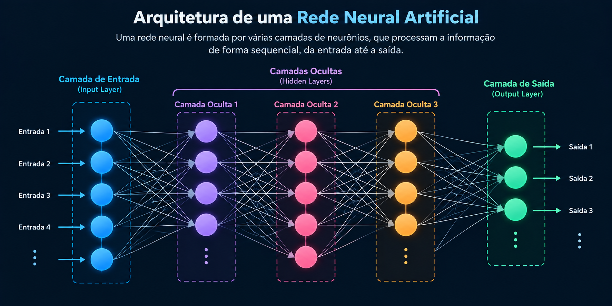
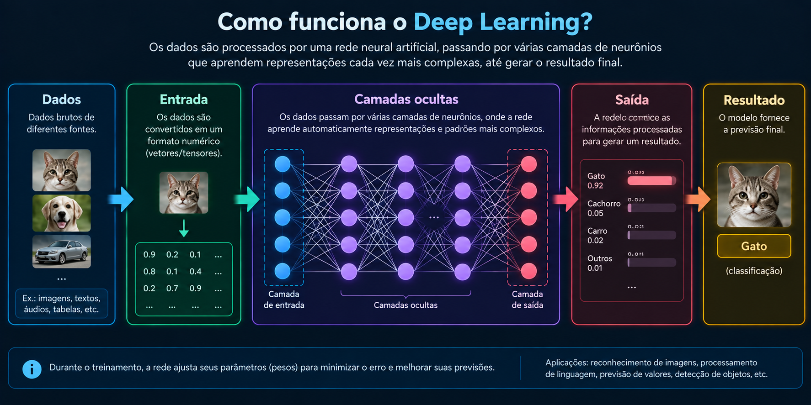

O que é Deep Learning?
Deep Learning, ou Aprendizado Profundo, é uma área do Machine Learning baseada
principalmente no uso de redes
neurais artificiais com múltiplas camadas. Essas redes são capazes de aprender representações e padrões
a
partir dos dados utilizados durante seu treinamento.
O termo “profundo” está relacionado à existência de várias camadas de processamento entre a entrada e a
saída de uma rede neural. Conforme uma informação atravessa essas camadas, diferentes transformações são
realizadas até que o modelo consiga produzir um resultado.
Uma das características importantes do Deep Learning é sua capacidade de trabalhar com informações
complexas, como imagens, textos e áudios. Em determinadas aplicações, o próprio modelo consegue aprender
características úteis diretamente a partir dos dados, reduzindo a necessidade de definir manualmente
todas
essas características.
Atualmente, o Deep Learning é uma das tecnologias fundamentais para diversas aplicações modernas de
Inteligência Artificial. Reconhecimento de imagens, processamento de linguagem natural, reconhecimento
de
voz e Inteligência Artificial Generativa são algumas das áreas que utilizam redes neurais profundas.

Como funciona o Deep Learning?
O funcionamento do Deep Learning está relacionado às redes neurais artificiais. Essas redes são formadas
por unidades chamadas neurônios artificiais, que são organizadas em diferentes camadas e conectadas umas
às outras.
De maneira simplificada, uma rede possui uma camada de entrada, camadas intermediárias, também chamadas
de camadas ocultas, e uma camada de saída. Os dados entram na rede e passam por diversas operações
matemáticas enquanto atravessam essas camadas.
Durante esse processo, diferentes partes da rede podem aprender representações úteis para a tarefa. Em
um sistema de reconhecimento de imagens, por exemplo, as camadas podem desenvolver representações
relacionadas a diferentes características visuais presentes nos dados.
A camada de saída utiliza as informações processadas anteriormente para produzir o resultado final.
Dependendo da aplicação, esse resultado pode representar uma classificação, uma previsão ou outro tipo
de informação.
Quanto maior e mais complexa for a rede, maior pode ser a quantidade de parâmetros envolvidos. Por isso,
modelos modernos de Deep Learning podem exigir grande capacidade computacional para serem desenvolvidos
e treinados.
